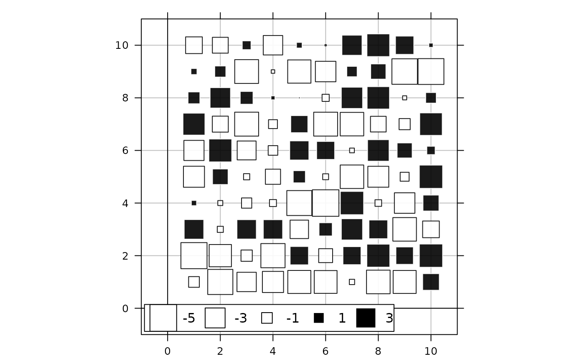
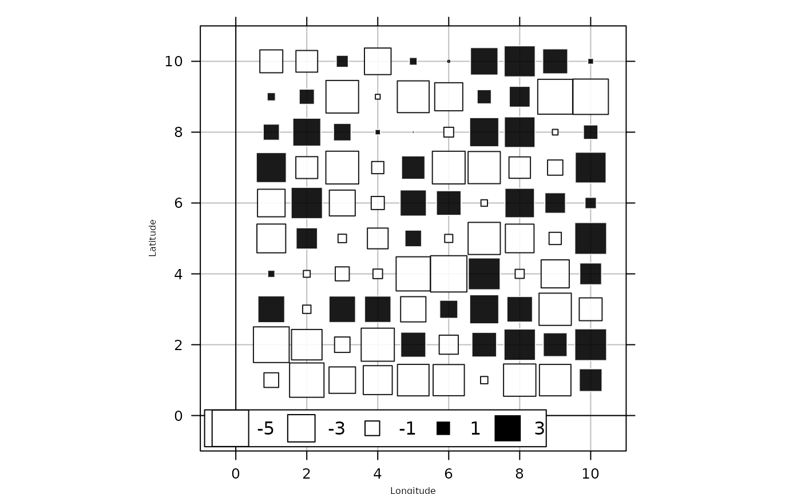
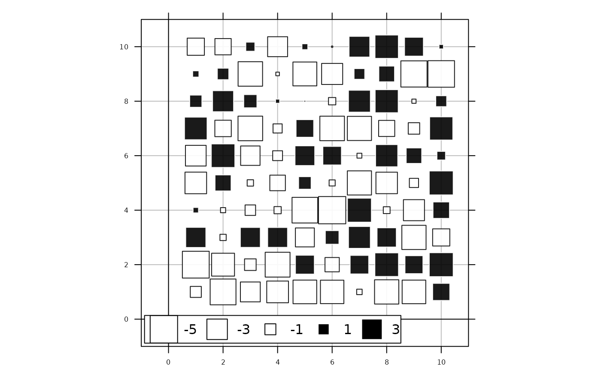
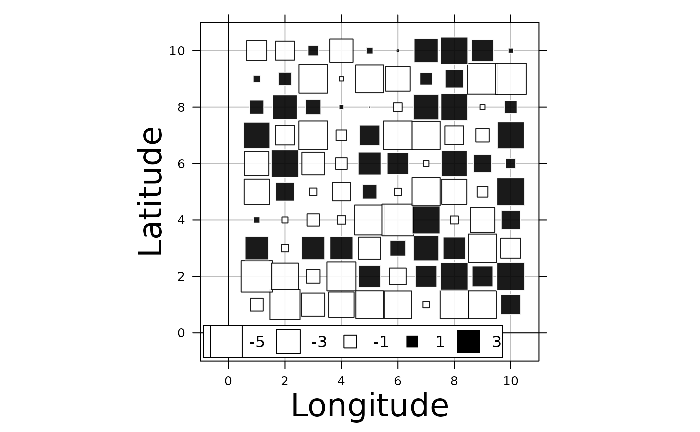

Frequently Asked Questions
Aurélie Siberchicot, Stéphane Dray, Jean Thioulouse
2024-03-08
Source:vignettes/FAQ.Rmd
FAQ.Rmd## Registered S3 methods overwritten by 'adegraphics':
## method from
## biplot.dudi ade4
## kplot.foucart ade4
## kplot.mcoa ade4
## kplot.mfa ade4
## kplot.pta ade4
## kplot.sepan ade4
## kplot.statis ade4
## scatter.coa ade4
## scatter.dudi ade4
## scatter.nipals ade4
## scatter.pco ade4
## score.acm ade4
## score.mix ade4
## score.pca ade4
## screeplot.dudi ade4##
## Attaching package: 'adegraphics'## The following objects are masked from 'package:ade4':
##
## kplotsepan.coa, s.arrow, s.class, s.corcircle, s.distri, s.image,
## s.label, s.logo, s.match, s.traject, s.value, table.value,
## triangle.class
set.seed(2564)
df <- data.frame(x = rep(1:10,1),
y = rep(1:10, each = 10),
ms_li = runif(100, min = -5, max = 4))How to personalize plots
How to update title axes?
s.value(df[, 1:2], df$ms_li,
paxes.draw = TRUE)
Size titles on axes
xlab.cex and ylab.cex manage the size
titles on the x and y axes.
s.value(df[, 1:2], df$ms_li,
paxes.draw = TRUE,
xlab = "Longitude", xlab.cex = 0.5,
ylab = "Latitude", ylab.cex = 0.5
)
Size labels on axes
scales.x.cex and scales.y.cex manage the
sizes labels on the x and y axes.
s.value(df[, 1:2], df$ms_li,
paxes.draw = TRUE,
scales.x.cex = 0.5,
scales.y.cex = 0.5
)
Margin of axis
layout.heights = list(bottom.padding = 1) manages the
margin of the bottom axis. This enlarges the space for a larger title
axis.
s.value(df[, 1:2], df$ms_li,
paxes.draw = TRUE,
xlab = "Longitude", xlab.cex = 2,
ylab = "Latitude", ylab.cex = 2,
layout.heights = list(bottom.padding = 2)
)